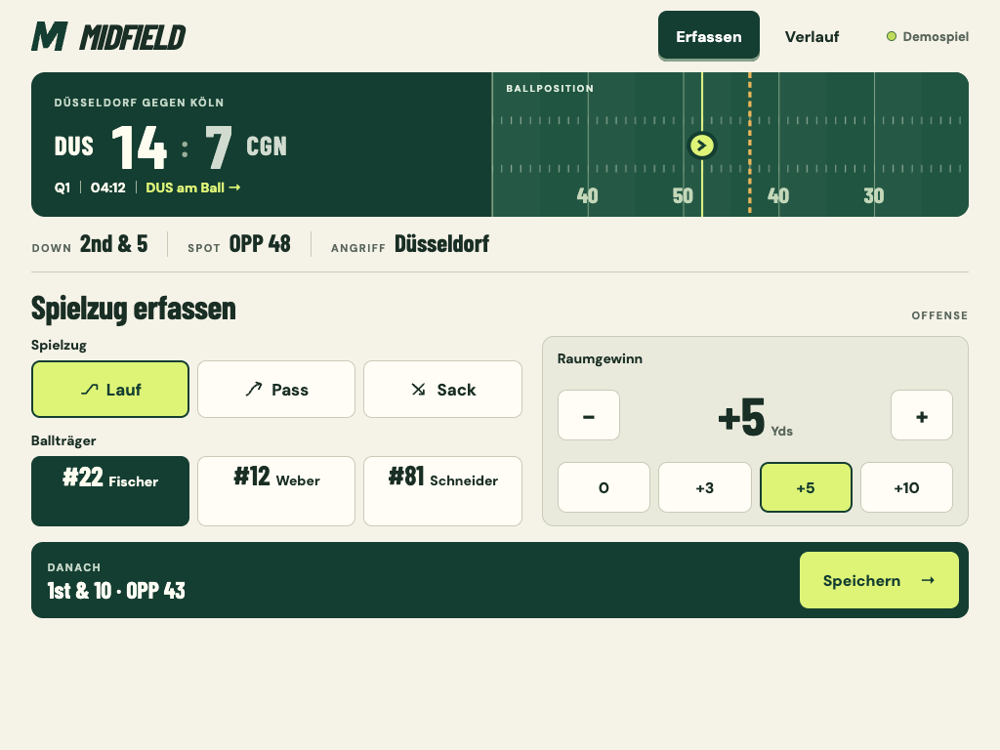
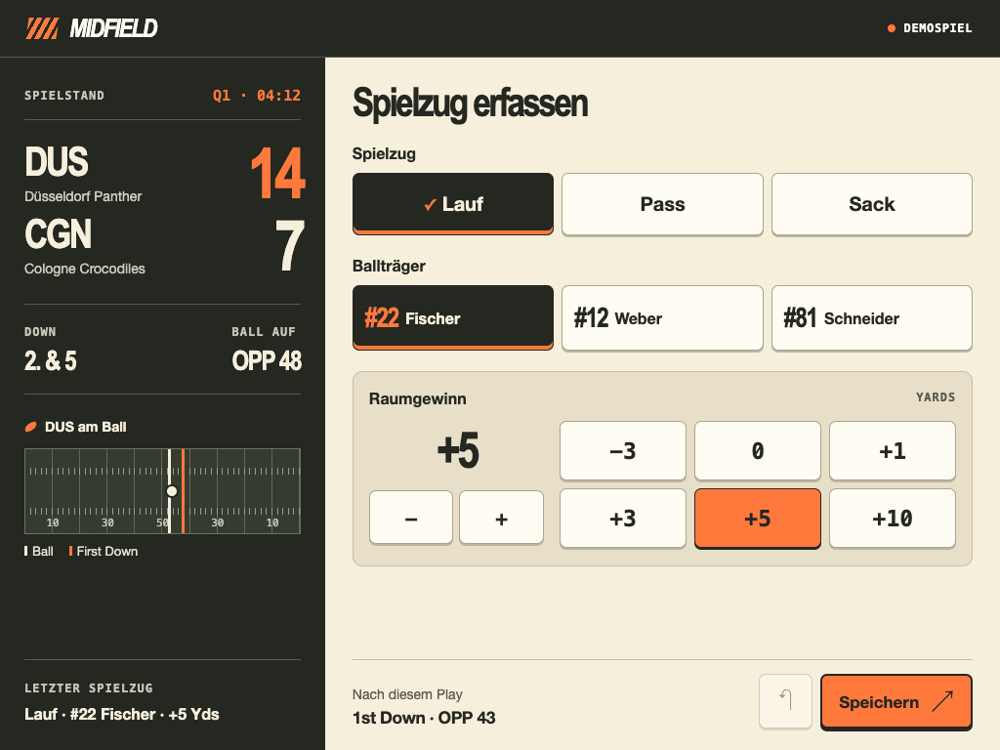
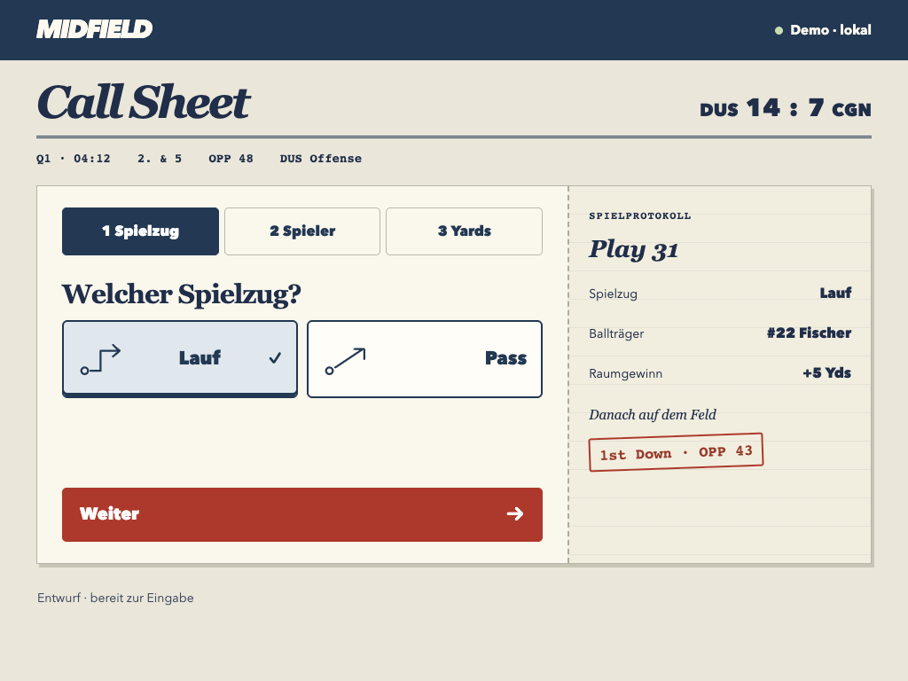

Fieldline
Playtyp, Trikotnummer und Yards auf einer Fläche. Der Feldstreifen zeigt Ball und First Down.
Drei Bedienkonzepte für denselben Lauf. Wähle einen Entwurf und teste die Erfassung.

Playtyp, Trikotnummer und Yards auf einer Fläche. Der Feldstreifen zeigt Ball und First Down.

Links das Spiel im Blick behalten. Rechts Yards wie an einem Tastenpult eingeben.

Drei kurze Schritte führen durch den Spielzug. Das Protokoll zeigt, was gespeichert wird.